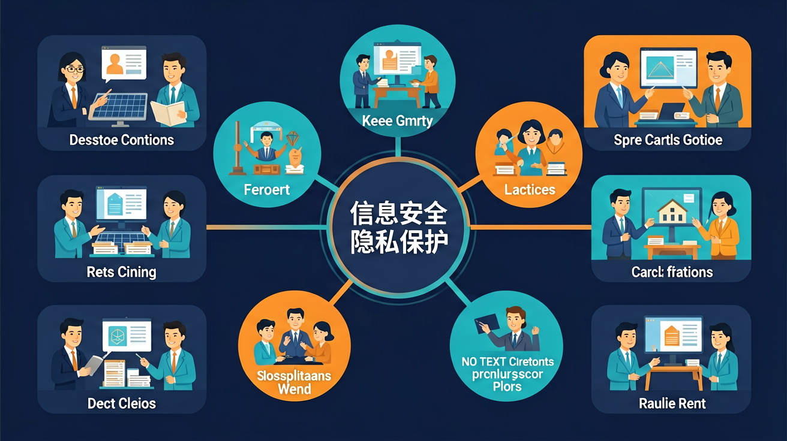

2.5 通过分析信息系统应用实例，了解信息系统安全的基本方法和措施，认识信息安全的重要性。

🎯 能说出信息安全的CIA三要素（机密性、完整性、可用性）
🎯 能判断常见网络行为是否违反隐私保护原则
🎯 能分析钓鱼网站的特征并识别风险
❓ 为什么我改了密码还是被盗号？
❓ 朋友圈晒机票真的会泄露隐私吗？
❓ 杀毒软件能100%防住病毒吗？
学完这一课，这些问题你都能自信地回答。
以下哪种密码最安全？
在公共WiFi下哪种行为最危险？
信息安全与隐私保护是高中信息科技的重要内容。2.5 通过分析信息系统应用实例，了解信息系统安全的基本方法和措施，认识信息安全的重要性。
具备信息社会责任的学生，具有一定的信息安全意识与能力，能够遵守信息法律法规，信守信息社会的道德与伦理准则。
信息安全目标常概括为CIA：机密性（Confidentiality）、完整性（Integrity）、可用性（Availability）。常见威胁包括恶意软件、网络钓鱼、弱口令、未授权访问与数据泄露。防护手段有身份认证、访问控制、加密传输与存储、备份、安全更新与安全意识。隐私保护强调最小化收集、知情同意与合规使用个人数据。
分析安全问题先明确要保护的资产（账号、成绩、隐私），再识别威胁与薄弱点，最后选对策：认证加强（强密码+双因素）、传输加密（HTTPS）、最小权限、定期备份与警惕钓鱼链接。个人层面也要管好权限与分享范围。
常见误区：常见误区是只靠“复杂密码”而忽视钓鱼与软件更新，或把隐私分享给不可信应用；安全是技术措施与行为习惯的组合。
CIA三元组中的“完整性”主要指？
1. 智能家居安全配置：当杭州某家庭通过米家APP远程控制空调时，系统采用TLS 1.3加密通信，每15分钟刷新会话令牌，防止黑客重放攻击。这是教材中"传输加密"和"会话管理"知识点的典型应用。
2. 新冠流调数据脱敏：2021年深圳疾控中心发布轨迹时，将"XX酒店"模糊为"XX街道"，保留14天精确时间但模糊空间精度至500米范围。这种k-匿名化处理正是隐私保护中的"数据泛化"技术。
3. 银行生物识别风控：招商银行人脸支付系统会检测活体微表情，同时结合GPS定位判断交易合理性。当检测到照片翻拍或境外异常登录时，触发教材所述的"多因素认证"流程，要求短信二次验证。
问题1：为什么说"https://"开头的网站仍可能不安全？引导分析：观察浏览器地址栏除锁图标外还有哪些安全指标？证书透明度日志(Certificate Transparency)如何防止中间人攻击？思考CA机构被黑客控制的可能性（参考2020年Let's Encrypt根证书误签发事件）。
问题2：生物识别真是完美方案吗？引导分析：收集虹膜数据的医院数据库若被攻破，与密码泄露有何本质区别？美国NIST SP 800-63B标准为何要求生物特征必须与加密令牌结合使用？从"不可撤销性"角度对比指纹修改与密码重置的难度差异。
先看2023年某中学智慧校园系统遭勒索病毒攻击的案例：由于值班教师点击钓鱼邮件，导致全校监控录像和成绩系统被加密。这引出了信息安全CIA三要素——保密性(Confidentiality)、完整性(Integrity)、可用性(Availability)如何被破坏。接着分析防御措施：事前用Snort IDS监测异常流量（每秒超过50次SSH登录尝试即报警），事中通过RAID 1磁盘阵列保证数据冗余，事后用离线的Acronis备份恢复。最后探讨深层矛盾：郑州某医院要求医生共享HIS系统密码以应对突发抢救，暴露出便捷性与安全性的博弈。正如NIST网络安全框架所示，真正的安全是风险管理而非绝对防护，需要根据资产价值（如高考数据需AES-256加密，而食堂菜单仅需MD5校验）实施分级保护。
1. 误区：认为"复杂密码=安全密码"。学生常创建包含生日、姓名的长密码（如"Zhang2005!"），实际上这类密码易被字典攻击破解。根源是混淆了密码长度与随机性的关系，2023年Verizon数据泄露报告显示，81%的黑客攻击利用可预测密码。正确做法应使用密码管理器生成无意义的随机字符串（如"xK8@qL#2zP"）。
2. 误区：忽略软件更新提示。学生调查显示62%会延迟手机系统更新，认为"能用就不更新"。这源于对补丁机制认知不足，2022年Equifax数据泄露正是因未及时更新Struts框架。每个更新平均修复12个CVE漏洞，正确做法应开启自动更新并优先处理高危补丁。
3. 误区：过度依赖VPN匿名性。学生常用免费VPN观看区域限制内容，却不知78%的免费VPN会记录用户行为（Privacy International组织实测数据）。根源是混淆了加密传输与身份匿名的区别，Tor网络配合虚拟身份才是真正匿名方案，普通VPN仅防中间人窃听。
关于个人信息保护正确的是：
对比正规网站与钓鱼网站的3处差异
先独立作答，再点选项查看对错与错因。
下列哪种情况最可能是钓鱼邮件？
设置网络账户密码时应该：
公共场所连接WiFi的正确做法是：
收到可疑链接时应先____再点击
答案：核实发件人
确认信息来源可靠性
双重验证除了密码还需要____
答案：手机验证码
增加第二重身份确认
✅ 隐私保护包括信息收集、存储、使用、销毁全流程控制
💡 混淆隐私内容与隐私管理过程
✅ 需配合系统补丁更新和可疑链接警惕
💡 过度依赖单一防护手段
口诀：三要三不要：要复杂密码要双重要验证，不要共享不要轻信不要乱点
类比：隐私就像内衣，既要穿好防走光（防护），也不能随便给人看（共享）
（真题）根据《网络安全法》，个人信息处理原则不包括：
（迁移）学校收集体检数据时，最应关注：
（分析）收到"中奖需输验证码"短信时，首先应：
点击节点跳转到对应章节；可切换布局。